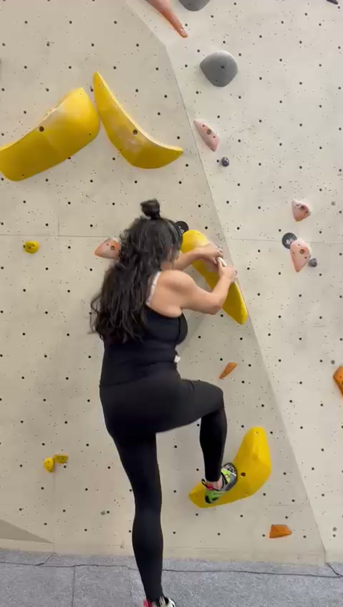
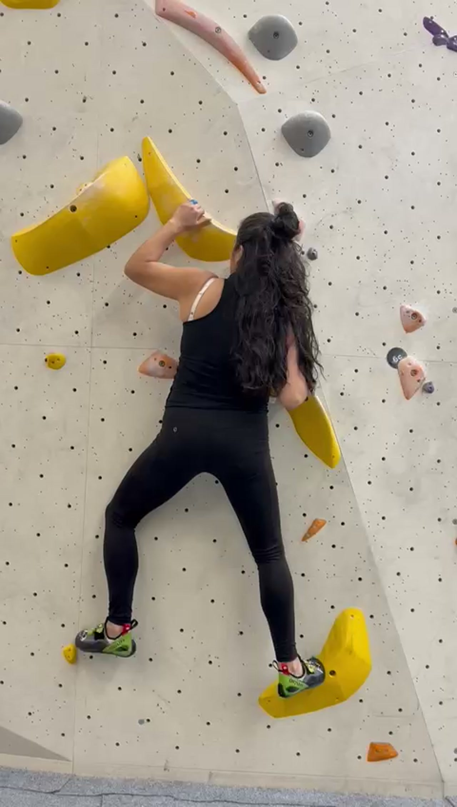
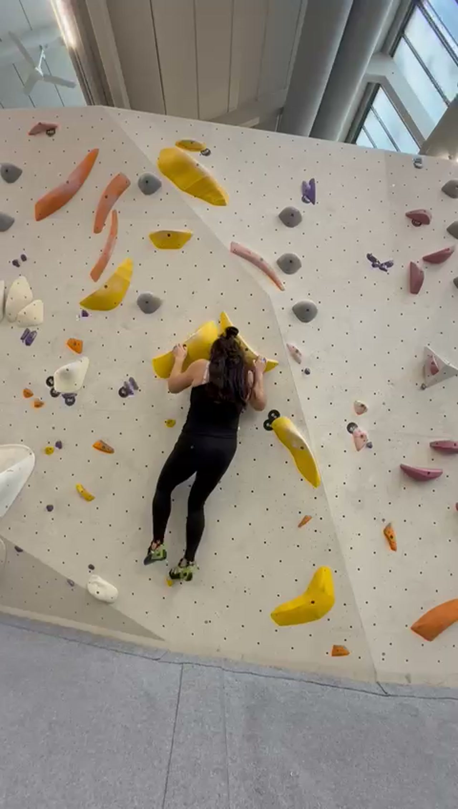
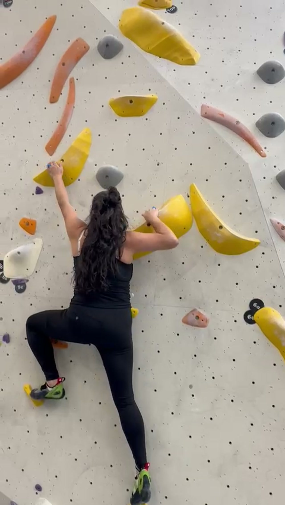
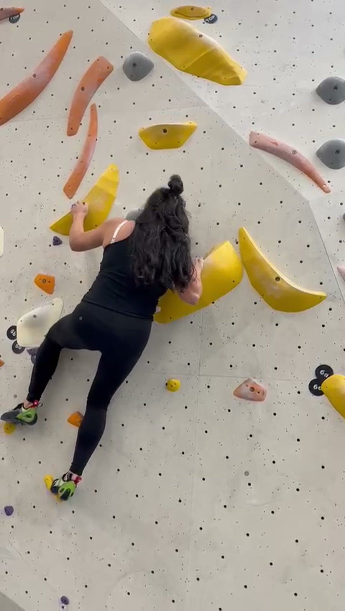
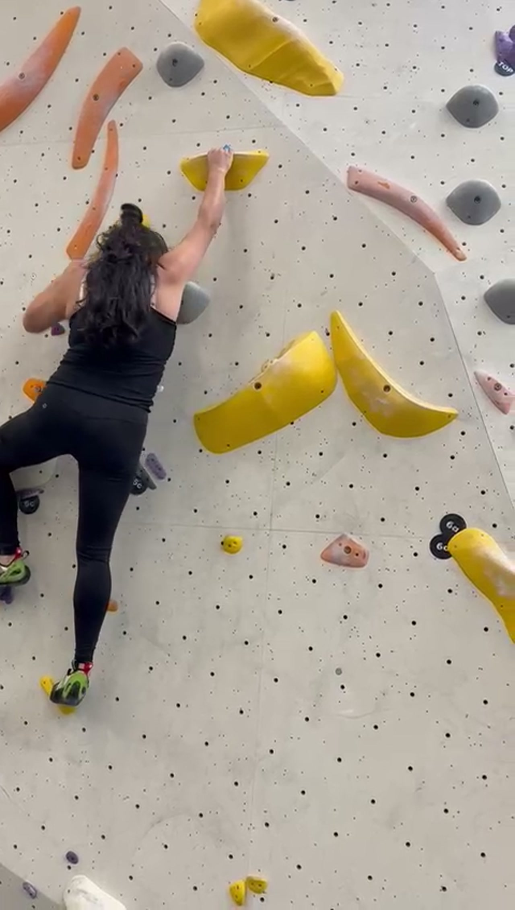
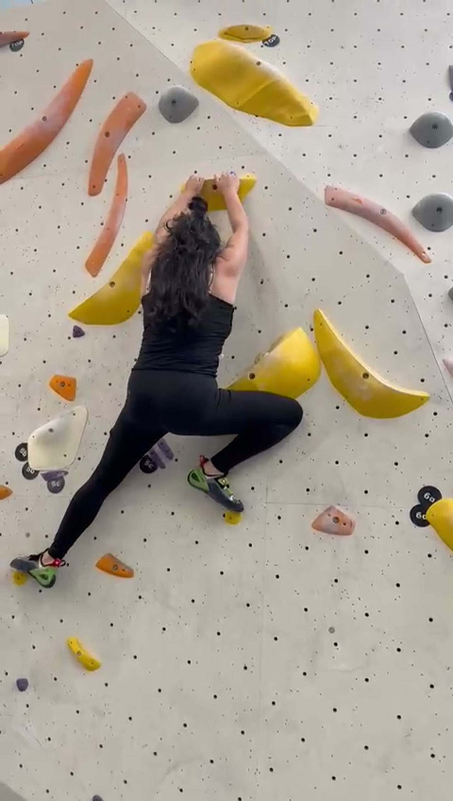
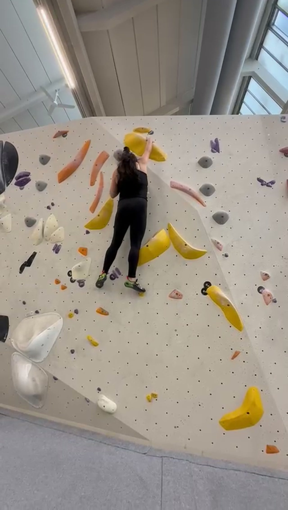
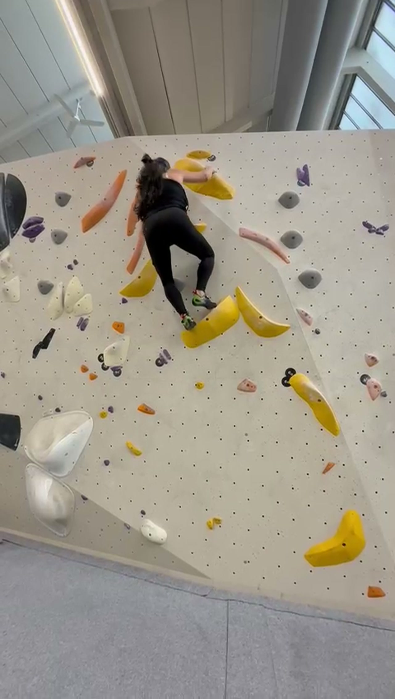
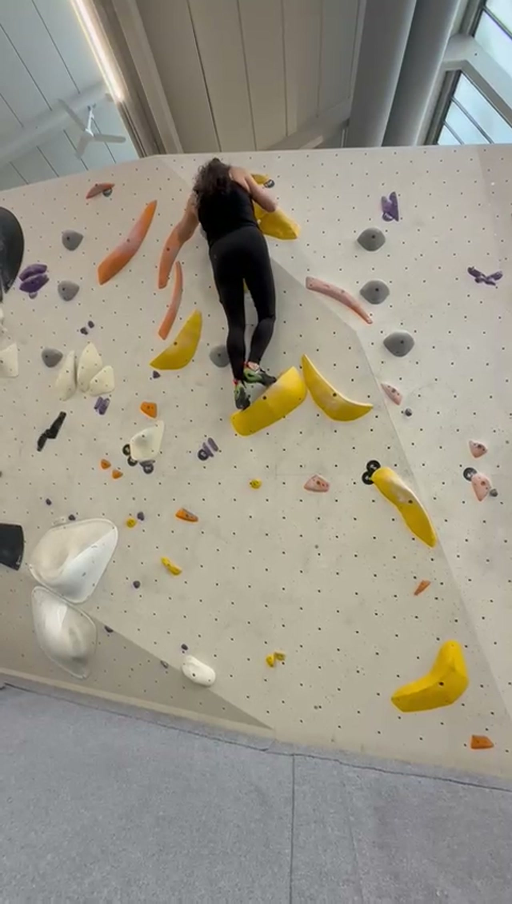

Target Video: c1697a74-4024-4852-9987-1d2a6439fa99.mp4
Activity: Indoor Bouldering
Giselle is performing indoor bouldering on a vertical-to-slightly-overhanging wall. The route follows a sequence of yellow holds (large volumes and crescent-shaped holds). The analysis covers her ascent from initiation to the top-out cluster.
Before each move, hang on straight arms and bend your knees/hips to load your legs. Think of your arms as hooks and your legs as the engine. Your legs are far stronger than your forearms—use them.
Actively drive your hips toward the wall before reaching for the next hold. Imagine your belly button pressing into the wall surface. This keeps your center of mass over your feet and dramatically reduces the load on your hands.
Before you reach for the next handhold, set your feet. Move your feet up to a high, secure position, press into them to elevate your body, then reach. The hand move should feel easy because your feet already did the hard work.
Place each foot with precision and intention — aim for the best part of the hold with the tip of your toe. No shuffling, no adjusting. One placement, stick it. This builds trust in your feet and improves efficiency.
Turn your body sideways (one hip into the wall) when reaching with the opposite hand. Use a back-flag to keep your hips close and maintain balance. This is far more efficient than climbing square-on.
The primary area for improvement is energy efficiency. Giselle exhibits "arm-dominant" climbing, where the upper body is pulling the weight while the hips sag away from the wall. This increases the gravitational pull on the fingers and leads to rapid fatigue ("pumping out"). By bringing the hips closer to the wall and initiating movement from the legs, she can climb significantly longer and more difficult routes.
| Frame | Biomechanical Observation |
|---|---|
| 1 | Good starting position — right foot high-stepping onto a yellow volume, body close to the wall. |
| 5 | Classic arm-dominant position. Both arms bent and loaded above head, hips well away from wall. |
| 8 | Wide split stance, both hands matched high. Very pumpy position; hips far from wall. Needs to commit weight over one foot. |
| 11 | Top-out phase. Muscling through with arms. Body slightly sagged away from the wall. |

Frame 1
Frame 5
Frame 9
Frame 13
Frame 17
Frame 21
Frame 25
Frame 29
Frame 33
Frame 37